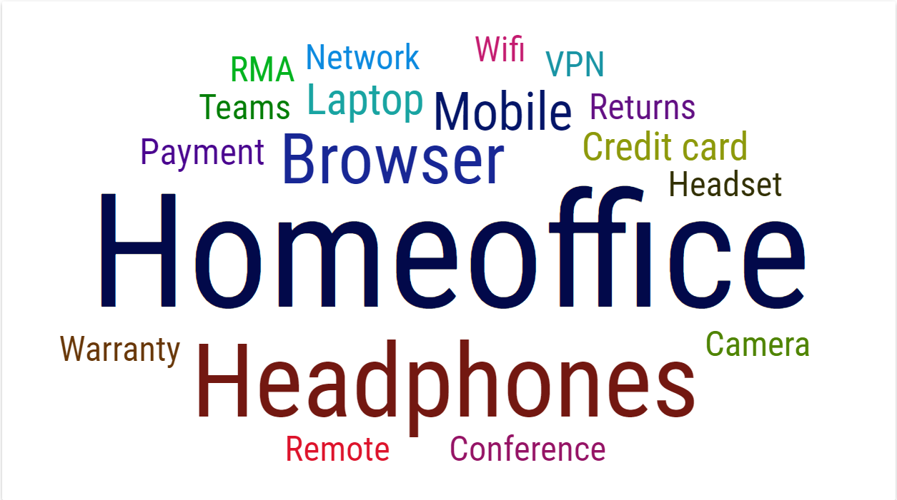
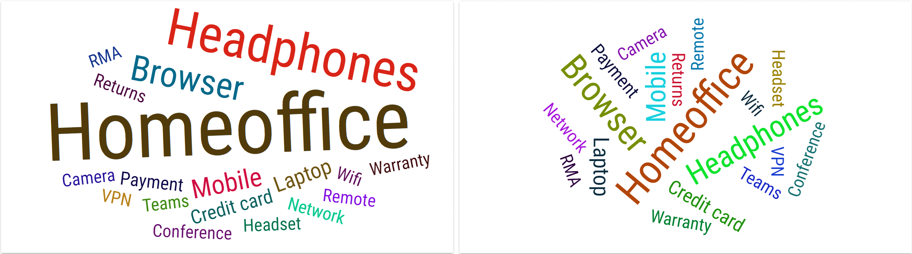
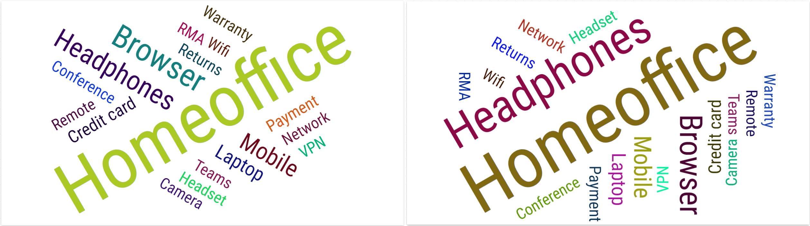
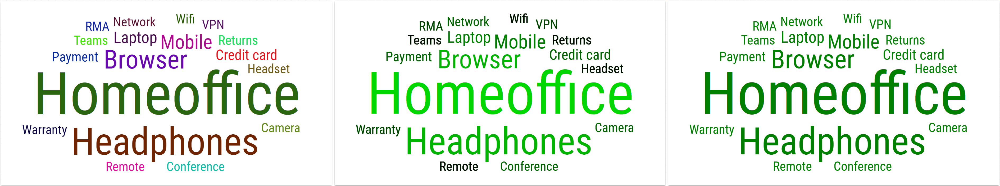
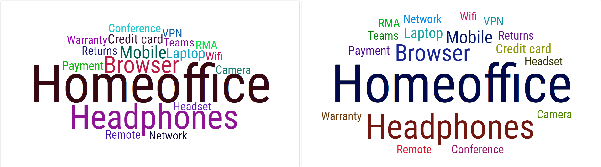

Word Cloud¶
Word Cloud graphically displays words in a size that depends on the weight of the word. Size of the words in a source is directly proportional to weight. For example, the topics most talked about, in agent and customer communication, will have the largest font size. The data to be processed is obtained from the source table which contains the word and the weight assigned to it.
The display of words in the source is fully customizable. Size coefficient, rotation of words and colors can be set.
Figure 1: Word Cloud
Rotation can be adjusted by setting minimum and maximum rotation angle.
Figure 2: Word Cloud with different rotation angle range.
The number of different rotation angles within this range, can be set by entering the number of rotation steps.
Figure 3: Word Cloud with different rotation steps. Two steps in the left and four steps in the right image.
There are three types of color mode. Random, Column and Fixed.
Figure 4: Word Cloud with different color modes.
Also, a spacing between words can be adjusted.
Figure 5: Word Cloud with different spacing.
For more information about editing this segment, see Word Cloud chapter.